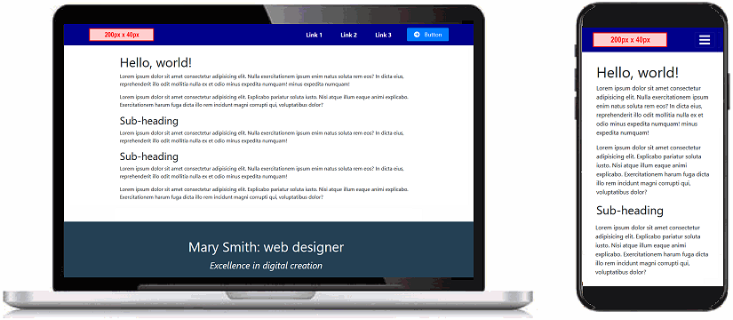
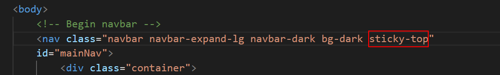

Learning Goals
At the end of this Tutorial you will be able to:
- Use and customise the desktop/laptop and mobile menu system provided by Bootstrap.
- Update a standard web page footer element with your own contact details and social media links.
You can view a finished version of the Bootstrap menu and footer web page you will work in this Tutorial by clicking the image or text link below. The finished web page will open in a new tab of your web browser.

bootstrap-menu-footer.html
Downloading your sample files
In this exercise, you will work with the following web page and stylesheet:
- bootstrap-menu-footer.html: Click this link to open the web page in a new tab of your web browser.
Right-click anywhere in the web page and choose View Page Source from the context menu displayed.
Next, right-click anywhere on the web page source and choose Save as... (Chrome) or Save Page As... (Firefox) from the context menu displayed.
Save the web page in the bootstrap sub-folder of your websites folder with the name bootstrap-menu-footer.html
Ensure the Save as type: dropdown list is set to Webpage, HTML only (*.HTML, *.htm).
You can close the browser tab containing the bootstrap-menu-footer.html web page.
Your websites/bootstrap sub-folder shown now look as shown below.
- bootstrap-menu-footer.css: Click this link to open the stylesheet file in a new tab of your web browser.
Right-click anywhere in the browser window, and from the context menu, choose Save as... (Chrome) or Save Page As... (Firefox).
Save the bootstap-form.css stylesheet file to your websites/bootstrap/assets/css sub-folder.
Ensure the Save as type: dropdown list is set to the correct file type.
You can close the browser tab containing the bootstrap-menu-footer.css stylesheet.
Your websites/bootstrap/assets/css sub-folder shown now look as shown below.
You have now saved the web page and stylesheet you need for this Tutorial.
Downloading the placeholder logo image
A menu will typically include a logo image. Right-click on the placeholder logo below, choose Save Image As from the context menu, and download it to your C:/websites/bootstrap/assets/img sub-folder.
When you use this sample menu web page in a website, you will replace this image with the actual logo image of the website.
Inspecting the Bootstrap navbar
In your web browser, display the bootstrap-menu-footer.html web page.
In VS Code, open the bootstrap-menu-footer.html file and the bootstrap-menu-footer.css stylesheet.
Let's review some elements of the Bootstrap menu system.
The navbar background colour
In the navbar block at the top of the bootstrap-menu-footer.html web page, you can see two classes navbar-dark and bg-dark. These, working together, control the background colour of the navbar.
If you prefer a navbar with a light background, replace these classes with navbar-light and bg-light as shown below.
When you change the navbar background from dark to light, the colour of the hyperlinks in the navbar also changes accordingly. In this way, the text of the menu links is always visible against the navbar background.
You can edit the dark or light background colour of the navbar in the bootstrap-menu-footer.css stylesheet.
To apply a transparent background to a navbar, replace the two dark or light coloured background classes with a single class named navbar-transparent.

The website logo
The first item within the navbar is the logo of the website. Your sample web page includes an image named website-logo.png. This sample logo is 200 pixels high and 40 pixels wide.
This logo image is one image you do not want the web browser to resize according to the width of the user's screen. For this reason, the logo's dimensions are set in the web page where they cannot be overwritten by a setting in a stylesheet.
The hamburger icon
The so-called hamburger icon that is displayed at the right of the Bootstrap menu on mobile screens is provided by the Font Awesome icon set. For this reason, a web page that includes a Bootstrap menu must include a link to Font Awesome stylesheet in the head of the web page.
Each of the text hyperlinks in the navbar is created as an item in a HTML bulleted list. You can edit the text displayed (Link 1, Link 2, ...) and also the link destination.

To add a new menu option, just add a further HTML list item. Conversely, to remove a menu option, just delete the bulleted item.
The ‘call-to-action’ button
The final menu option is typically styled as a button with an icon.
Making your menu ‘sticky’
A so-called sticky menu is one that remains fixed at the top of the desktop/laptop or mobile screen, even as the user scrolls down through the web page. This makes it easier for the user to navigate to other pages on the website.
Let's make the menu on your sample web page sticky:
- In VS Code, display the bootstrap-menu-footer.html web page.
- In the navbar block at the top of the web page, add the Bootstrap class of sticky-top as shown below.

Uploading your Bootstrap folder to GitHub
Follow these steps below to upload your entire Bootstrap folder to your website on GitHub.
- Open a new tab in your web browser and go to GitHub.com. If you are not already signed in to your GitHub account, sign in now.

- On your GitHub home page, click the name of the repository (‘repo’) that holds your web pages. Its name will look as follows, where username is your chosen username on GitHub.
username.github.io

- On the next GitHub screen displayed, click the Add file button near the right of the screen and choose Upload files from the dropdown list.

- In File/Windows Explorer, select your bootstrap folder, and drag-and-drop it to your repository on GitHub.

- Scroll down to the bottom of the GitHub screen, and accept or edit the short message (Add files via upload) in the Commit changes box.
Finally, click the green Commit changes button to upload your entire bootstrap folder and all the files it contains.
Your uploaded web page is published on GitHub at a web address similar to the following, where username is the username you have chosen for your GitHub account:
https://username.github.io/bootstrap/bootstrap-menu-footer.html
It may take a few minutes for your uploaded files to appear on GitHub.